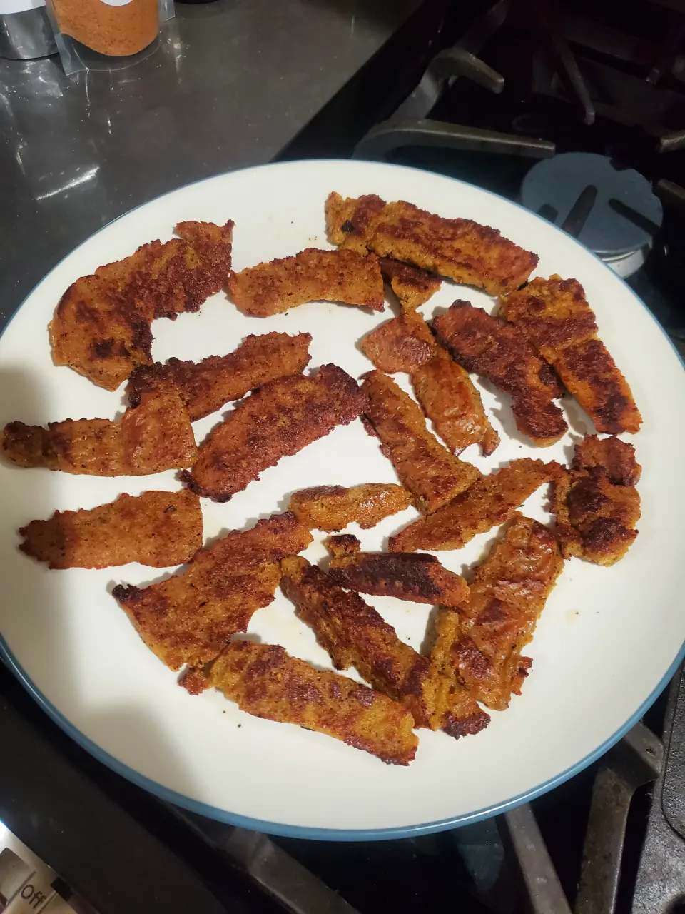

Seitan Gyros
|
By Chris P.
|
TattooedMamaof2 on Food.com submitted a wonderful recipe for Seitan flavored like gyro meat and it is just
delightful!
Seitan Gyro Meat recipe
Ingredients
- 1/2 lbs of Seitan Gryo 'meat'
- 1 tablespoon oil
- 4-6 pitas or other flatbread
- 1 cup tzaiki sauce
- 1 tomato, diced
- 1 cucumber, diced
- 1 onion, diced
Directions
- Heat the oil in a skillet on medium heat.
- Slice off thin strips of the gyro 'meat' and fry them in the oil.
- Once the strips are crisped to your preference, add them, some tzaiki sauce and the veggies to your flat
bread.
- Enjoy!